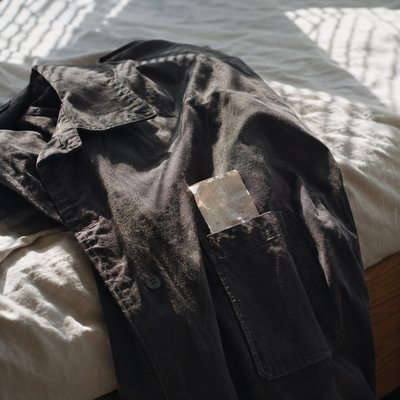

An old receipt turns up in a jacket pocket, carrying the precise details of a purchase that has almost entirely vanished from memory. The time, the price, the batteries — all recorded in black ink, even as the paper slowly fades. What remains is a small, ordinary transaction from a day that no longer feels familiar.
“Printed in Black, Turning to Gray” reflects on the strange imbalance between what we remember and what the world records for us. A receipt can preserve the exact minute and cost of an errand, but it cannot tell us what we were thinking, what happened before, or why that particular moment mattered enough to leave a trace. The document survives, but the day itself is mostly gone.
There is something quietly moving about that. Even the most forgettable moments once occupied a real place in our lives. Sometimes all that remains is a fading piece of paper, holding on to details we never knew we would lose.
Found a receipt in an old jacket pocket From a hardware store on Third Street Printed in black, now turning to gray A Tuesday morning I don't remember Eleven forty-two AM AA batteries, four-pack, five forty-nine I don't remember much about that day But the receipt still has it written down The paper's folded where the jacket kept it Small black numbers fading in the light No record of the things I can't recall Holding on longer than I do I look at the ink, what's left of the trace A tiny transaction, nothing more I don't know why I kept it all this time Eleven forty-two on an ordinary Tuesday Eleven forty-two AM AA batteries, four-pack, five forty-nine I don't remember much about that day But the receipt still has it written down Eleven forty-two Five forty-nine Turning to gray